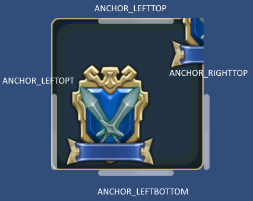

SCROLLBAR¶
This is a control to display the scroll bar.
By assigning to the scrollable control, this control is enabled.
By associating SCROLLBAR control the GROUP property, it is possible to display a scroll bar.
It is also possible to assign some scrollbars to a scrollable control.
It is listed scrollable controls below.
SCROLLBAR(Control name) {
Property 1;
Property 2;
:
:
Property n
};
Example¶
#include "wr.h"
$w = 300;
LISTBOX(List) {
ID = 001_100_00000;
POSITION = 0,160;
STYLE = ANCHOR_BOTTOM;
SIZE = $w,160 - 16;
CONTENTS_SIZE = $w,48;
CONTENTS = {
CHECKBOX(IP) {
ID = 001_000_00020;
CAPTION = 001_000_00030;
STYLE = ANCHOR_LEFTTOP;
POSITION = 0,0;
SIZE = $w,48;
};
}
GROUP = SCROLLBAR(List);
};
SCROLLBAR(List) {
ID = 001_100_00010;
DEF_SCROLLBAR;
STYLE = ANCHOR_RIGHTTOP;
POSITION = 0,-16;
SIZE = 0,- 16 * 2;
};

Position and size¶
Unlike normal control, handling of location and size of this control is special.
The position and size are relative to the scrollable controls that are assigned.
Position and size is a relative value from the scrollable are related control.
Valid anchors to see here .
#include "wr.h"
WINDOW(255_000_00001) {
STYLE = WINDOW_STYLE_NOTITLEBAR|WINDOW_STYLE_ANCHOR_CENTER;
POSITION = 0,0;
SIZE = 256,256;
TEX_ID = 100_000_00001;
};
CONTAINER(Map) {
ID = 000_000_000100;
POSITION = 0,0;
SIZE = RELATIVE_SIZE(0),RELATIVE_SIZE(0);
CONTENTS_SIZE = 512,512;
COLOR = COLOR32(255,255,255,255);
CONTENTS = {
BUTTON(A) {
STYLE = BASE_LEFT;
PRIORITY = -1;
POSITION = 0,-256;
TEX_ID = "TQML0";
};
BUTTON(B) {
STYLE = BASE_TOP;
PRIORITY = -1;
POSITION = 256,0;
TEX_ID = "TQML0";
};
BUTTON(C) {
STYLE = BASE_BOTTOM;
PRIORITY = -1;
POSITION = 256,-512;
TEX_ID = "TQML0";
};
BUTTON(D) {
STYLE = BASE_RIGHT;
PRIORITY = -1;
POSITION = 512,-256;
TEX_ID = "TQML0";
};
};
GROUP = SCROLLBAR(LEFT),SCROLLBAR(RIGHT),SCROLLBAR(TOP),SCROLLBAR(BOTTOM);
};
SCROLLBAR(LEFT) {
STYLE = ANCHOR_LEFTTOP;
TEX_ID = "SCBBH";
POSITION = 0,0;
SIZE = 0,0;
};
SCROLLBAR(RIGHT) {
STYLE = ANCHOR_RIGHTTOP;
TEX_ID = "SCBBH";
POSITION = 0,0;
SIZE = 0,0;
};
SCROLLBAR(TOP) {
STYLE = ANCHOR_LEFTTOP|LISTBOX_ITEM_STACK_H;
TEX_ID = "SCBBV";
POSITION = 0,0;
SIZE = 0,0;
};
SCROLLBAR(BOTTOM) {
STYLE = ANCHOR_LEFTBOTTOM|LISTBOX_ITEM_STACK_H;
TEX_ID = "SCBBV";
POSITION = 0,0;
SIZE = 0,0;
};
Direction of the scroll bar¶
You can use not only the vertical scroll bar but also the horizontal scroll bar.
Please set the following values to the style.
Vertical direction: LISTBOX_ITEM_STACK_V
Horizontal direction: LISTBOX_ITEM_STACK_H
Display control of the scroll bar.¶
By setting the style, you can choose the scrollbar display type whether display or hide.
You can choose from the following three types.
SCROLLBAR_DISPLAY_NORMAL(Default)
Only when the area is scrollable and you touch the scrollable area,it is displayed.
SCROLLBAR_DISPLAY_SCROLLABLE
It display only when the area is scrollable.
SCROLLBAR_DISPLAY_ALWAYS
Always displays.
Property¶
Default value¶
TEX_ID = "SCBRH";
STYLE = LISTBOX_ITEM_STACK_V;
COLOR = 1,1,1,1;
ID = Control ID¶
Define the control ID.
ID = 001_000_00010;
Note
If you don’t set the ID, it generates automatically from the hash value.
POSITION = Ｘ，Ｙ¶
It determine the display position. It becomes relative position from a scrollable control.
POSITION = 0,-16;
TEX_ID = Texture ID,Part ID¶
TEX_ID = Part ID¶
You set the texture ID and the part ID.
SIZE = width,height¶
Set the display size of the scroll bar. It is the relative size of the scrollable control.
SIZE = 0,0; //display size
COLOR = R,G,B,A¶
It is possible to set the color values . By changing color , it affects all of the controls that are included .
Set R, G, B in the range of 0～2 .
If you set a value in excess of one , each color component can double the brightness.
Set A in the range of 0～1 .
STYLE = Flag0|Flag1|..|Flagn¶
You can set the display anchor of control.
Display position anchor flag |
Description |
|---|---|
| ANCHOR_DEFAULT | Set the anchor position in the upper left
Same as ANCHOR_LEFTTOP
The default control center position is set to BASE_LEFT.
|
| ANCHOR_LEFTTOP | Set the anchor position in the upper left
The default control center position is set to BASE_LEFT.
|
| ANCHOR_LEFTBOTTOM | Set the anchor position to the left.
Located along the lower edge
The default control center position is set to BASE_LEFTBOTTOM.
|
| ANCHOR_RIGHTTOP | Set the anchor position in the upper right
The default control center position is set to BASE_RIGHTBOTTOM.
|
The actual placement, please refer to the figure below.

Style that limits the function as follows .
Function limit style |
Description |
|---|---|
| HIDE | Hide. |
| LISTBOX_ITEM_STACK_V | Set to the direction of the scroll bar in the vertical direction. |
| LISTBOX_ITEM_STACK_H | Set to the direction of the scroll bar in the horizontal direction. |
| SCROLLBAR_DISPLAY_NORMAL | Only when the area is scrollable and you touch the scrollable area,it is displayed. |
| SCROLLBAR_DISPLAY_SCROLLABLE | It display only when the area is scrollable. |
| SCROLLBAR_DISPLAY_ALWAYS | Always displays. |